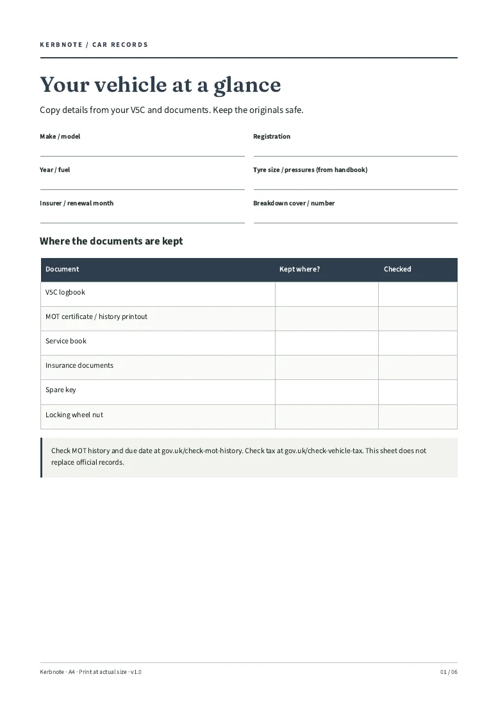
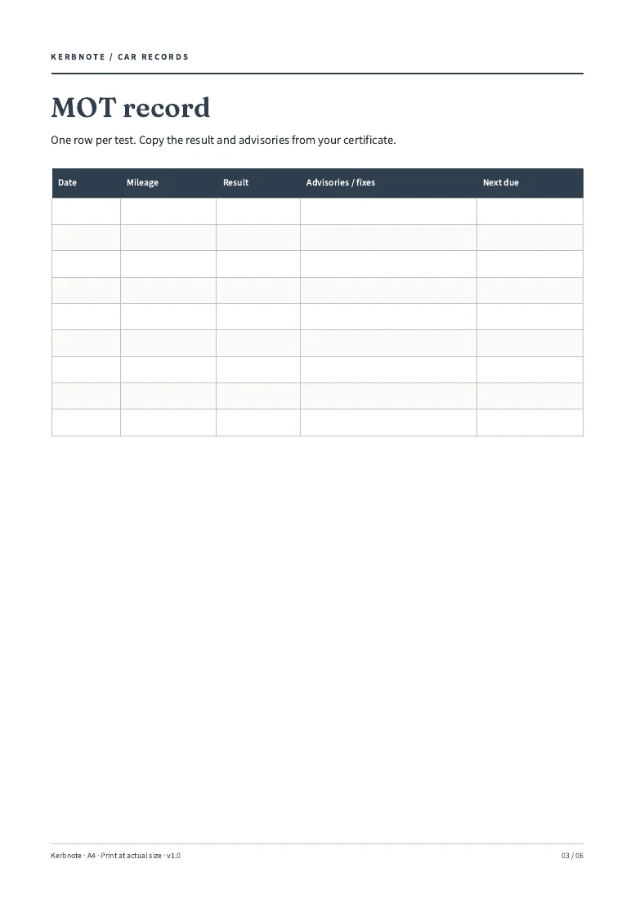

Fill the car page
Copy details from your V5C and documents.
FOR THE GLOVEBOX FOLDER
A printable car records pack for UK drivers: log MOTs, services, tyres, repairs and mileage in one place.
For: UK car owners who keep their own records. You get: 6-page A4 printable PDF, to download. Price: £4 one-off (planned; not on sale yet).
Checkout is not open. No orders or payments taken.
6-page A4 printable PDF · Digital files only

LOOK INSIDE
These are renders of the actual included pages. The pack is built; the shop is not open yet.

THREE SIMPLE STEPS
Copy details from your V5C and documents.
Write MOTs, services and repairs as they happen.
One folder to show a garage or a future buyer.
ONE PACK. ONE PRICE.
Date-free pages to reprint for each car in one household.
A record-keeping pack, not mechanical, legal or insurance advice. Check MOT status and due dates on GOV.UK; a note on paper is not proof of roadworthiness.
Standard A4 PDF, rendered and text-extracted in Chromium/Poppler. Made for pen and paper; not fillable or an app.
Kerbnote / Digital pack
£4
Planned price · one-off · not on sale
No order can be placed here. No payment is collected.
No purchases yet. Checkout must show delivery, cancellation and refund terms before sales open. Statutory rights will not be excluded.
BEFORE YOU DECIDE
Standard A4 PDF, rendered and text-extracted in Chromium/Poppler. Made for pen and paper; not fillable or an app.
Start with the vehicle page. Add jobs when they happen; no time saving is promised.
Not yet. The files have been built, but checkout and paid delivery are not open. This page does not take orders or reserve a place.
No purchases are being taken. Sale and delivery terms, including your cancellation and statutory rights, must be shown before checkout opens. There is no blanket “no refunds” policy.
Kerbnote is a UK sole-trader trading name. No mechanical advice, service intervals, MOT reminders by text or email, or legal guidance. Not linked to DVLA or GOV.UK. Please check the previews and limits before buying once sales open.
KERBNOTE / 6-page A4 printable PDF
£4 planned · one-off. Checkout is not open.